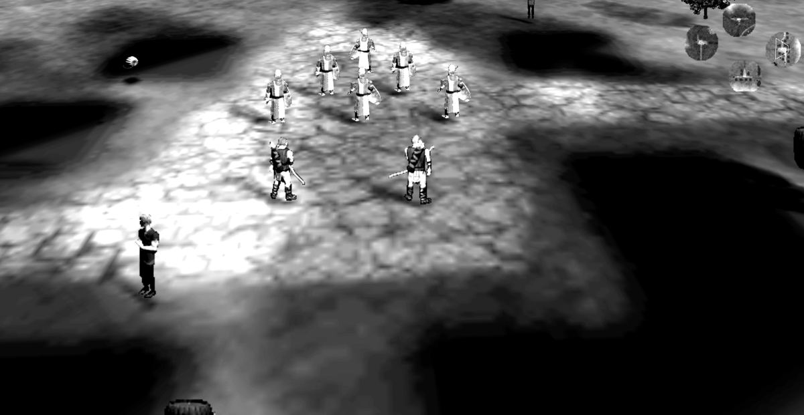

Two levels from Sir Mauriac's Tale now load, play and finish in Myth II 1.8.5, converted entirely by the tool.
- Tandem — the river level with 77 buildings. Rain falls, units and trees are drawn, the fighting works, and it ends on the normal end-game screen.
- In the Name of Glory — the snow level, with 146 scripted map actions. Plays from the start to the end-game screen with no errors in the log.

Converting the original TFL tags made this possible. A TFL plugin leans on the stock TFL tags the way a Myth II plugin leans on the base game, and Magma's port doesn't carry them all under their original names — Tandem alone needed 76 it lacked. Converting the original TAGS.GOR and ARTSOUND.GOR into a Myth II tagset solved all of them at once. (Visitors supply their own files locally; no game data is distributed.)
What converts now
| Maps | terrain (upsampled to Myth II's finer grid), markers and map actions |
|---|---|
| Units | monsters, units, and each monster's own “object” (its size, health and damage resistances) |
| Combat | projectiles, artifacts, mesh effects (explosion ripples) |
| World | scenery, weather (rain/snow), lighting, sprite art |
| Text | level names, captions, subtitles |
What we learned along the way
- Why units were invisible at first. In TFL a monster's size, health and damage resistances live on the monster. Myth II moved them into a separate “object” tag, which TFL shares between every monster. Read by Myth II, TFL's object says “size 0”, so every unit and tree was there — you could hear them fight and see their shadows — but drawn at zero size. Each monster now gets its own object, which is what Project Magma did by hand.
- Myth II halved the world unit, as the Fear manual warns. It shows up in places — a ground ripple's height doubles — but not everywhere: unit speeds and ranges did not need doubling.
- Building footprints need conversion. TFL stores each building's footprint in terrain cells, and Myth II's cells are half the size, so footprints have to be split 2×2. That's measured against the original TFL tags; converting it is next on the list.
- Some stock TFL tags must not replace Myth II's. The end-of-level statistics screen crashed until we stopped TFL's versions of Myth II's internal text, dialogs and fonts from overriding the originals.
What's still rough
- Lighting converts, but every map currently gets the same standard lighting. A dark cave would come out as bright as a meadow.
- Sounds, collection references, projectile groups and a few other types are still copied across unchanged. Both test levels play fine with them, but they haven't been checked one by one.
- Building models are measured but not converted yet.
- Terrain is upsampled by copying, not smoothing — see Q2.
- Only two levels have been tested so far, both single-player.
Try it and report what happens
Follow the download, setup and play instructions on the front page. Report the plugin, level, Myth II version and relevant log lines in the comment box below. No account is needed.